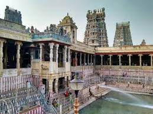
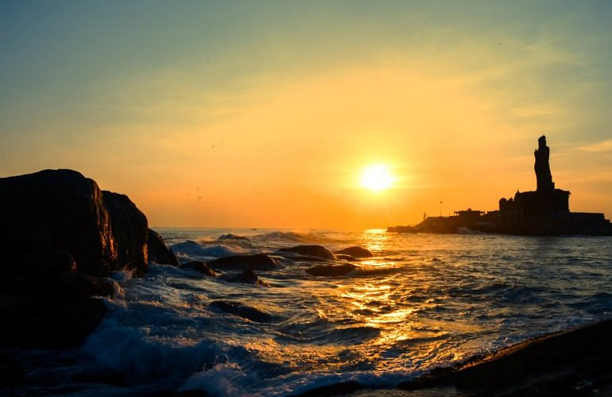
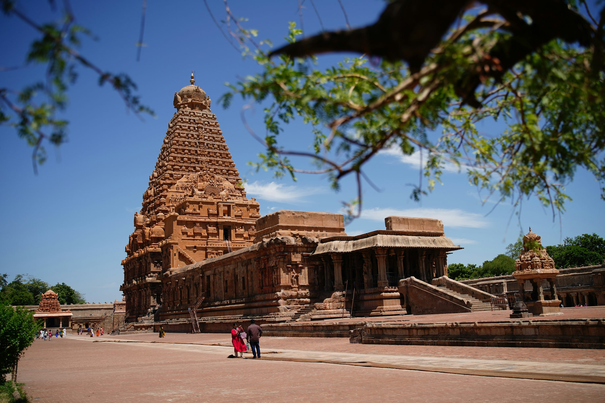
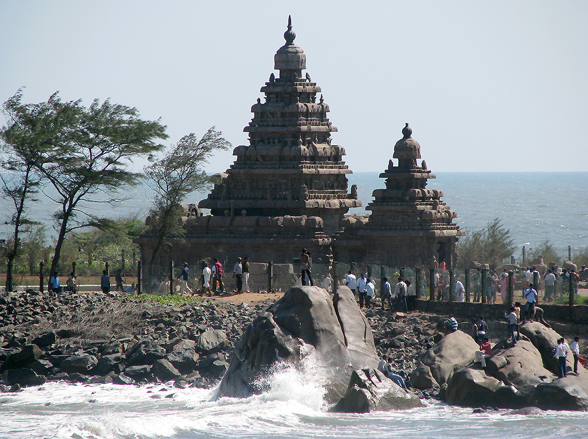

Explore Tamilnadu!
Welcome to Tamil Nadu – The Land of Temples
Tamil Nadu is renowned for its majestic temples, rich cultural heritage,
classical music and dance, and scenic coastlines. From ancient Dravidian
architecture to modern cities, Tamil Nadu is a blend of tradition and progress.
Top Places to Visit in Tamil Nadu

Madurai
Home to the world-famous Meenakshi Amman Temple, Madurai is one of the oldest cities in India, rich in history and devotion.

Ooty
The "Queen of Hill Stations," Ooty offers scenic mountains, tea estates, boating, and pleasant weather throughout the year.

Kanyakumari
At the southern tip of India, Kanyakumari is famous for its sunrise and sunset views, Vivekananda Rock Memorial, and beaches.

Thanjavur
Known for the Brihadeeswara Temple (UNESCO World Heritage Site), Thanjavur is the center of classical art, music, and architecture.

Mahabalipuram
A coastal town with ancient rock-cut temples, caves, and the Shore Temple, reflecting the grandeur of Pallava architecture.
Best Time to Visit Tamil Nadu
-> November to March is the best time to explore Tamil Nadu with pleasant weather for sightseeing.
April–June is hot but ideal for visiting hill stations like Ooty, Kodaikanal, and Yercaud.
July–September brings monsoon showers, making the landscapes lush and green.